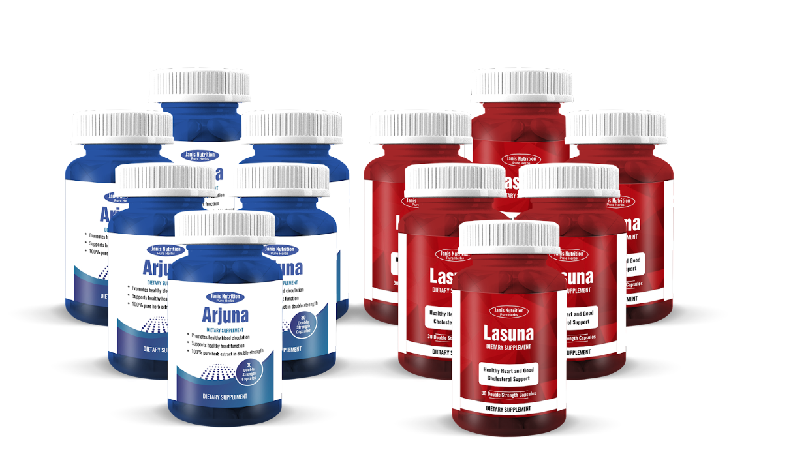
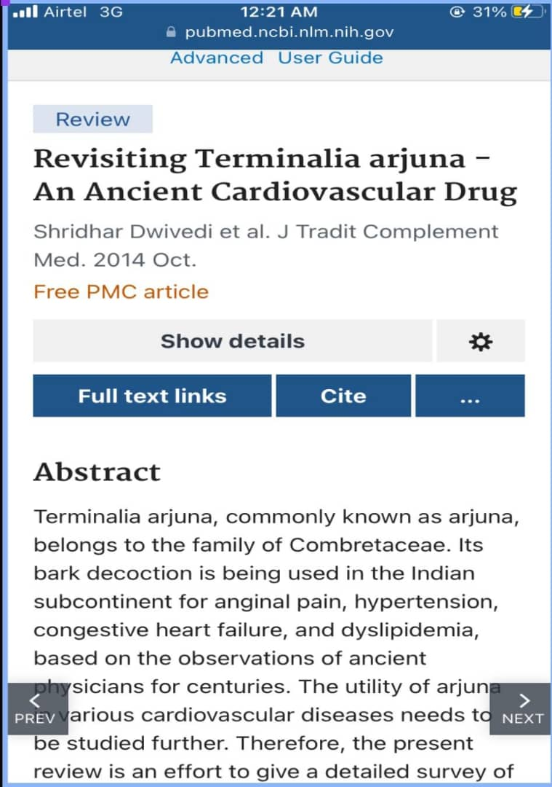
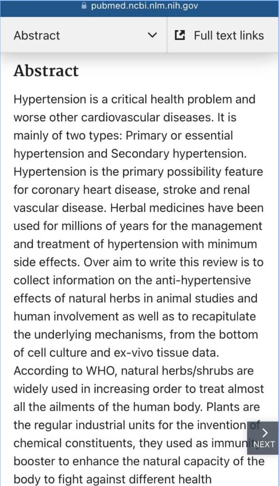
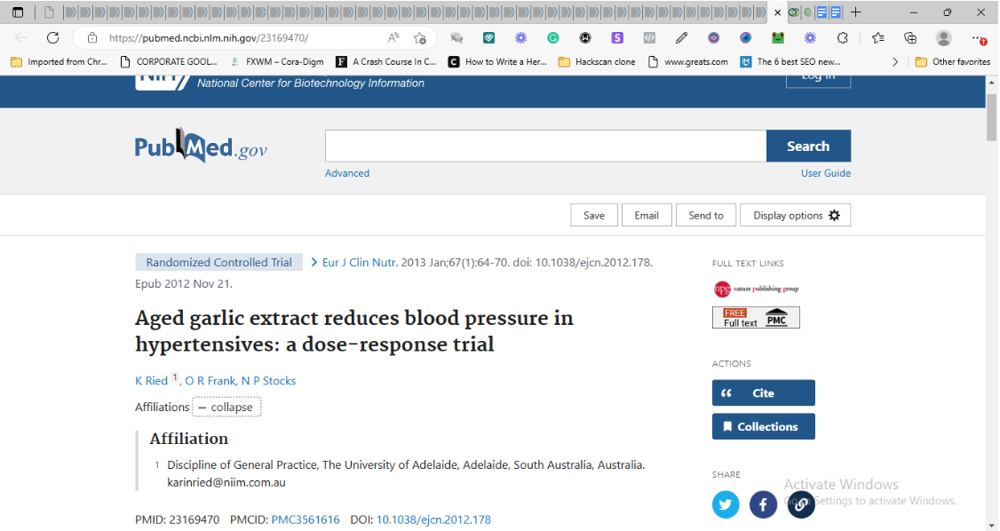

BREAKING NEWS
In just 6 minutes you'll quickly learn the secret
ingredient that helped me reverse hypertension
after 14 painful years.
Over 7,627 Nigerians already use this secret Indian
ingredient
"Here are some real testimonies from the thousands of people this secret solution has helped"
Below Is The Testimony Of
Dr. Akinola Owolabi PhD
My name is Akinola Owolabi (Ph.D). I am a scientist who fought high blood pressure for 14 painful years.
So it doesn’t matter where you currently are in your battle, this proven secret will reverse it and turn your life around immediately.
I know you’re thinking, “Akinola, are you sure this will work for me?”
Understandably, you should be skeptical because you’ve tried almost everything you’ve heard of — with no positive results.
But what I’m about to share with you is a proven solution backed by years of research and real testimonies – that can steer you to tremendous health
So, how did I discover this secret and powerful ingredient that reverses high blood pressure in less than 90 days?
As I said earlier, I’m a scientist and a researcher who suffered from high blood pressure for 14 years…
The pains, and search for answers led me to a life-changing encounter in India — where I met Ayurvedic expert, Dr. Anjali Kumar…
She introduced me to the most powerful ancient herbs in India with century-old heart-healing powers.
I used it and saw firsthand the transformative impact these ancient miracle herbs had on me.
After returning to Nigeria, I knew I had a mission — to share my story and — the missing ingredient in the treatment of High Blood Pressure.
And this is what people who I shared the secret ingredient with said
“I’ve been using many drugs before this. Then I decided to try Arjuna and Lasuna. For two weeks I didn’t check my blood pressure. But after taking it I noticed that there was no dizziness and headache, and I could walk again. I went from 180/130 to 110/80 in just 14 days. I recommended it to 3 friends, too. Thank you.”

Mrs. Chioma... I’m doing fine, thank God for Arjuna and Lasuna. I’m not done with the 3 packs but so far it has been effective and helped stabilize my blood pressure. I have seen a 10mmHg reduction in my systolic reading already.
Adamu said he slept well and his BP went from 150/80 to 134/83 which the doctor said was significant progress from his previous readings.

Alex said since they got Arjuna and Lasuna, his wife’s BP has never gone higher than 141/80… and that she now enjoys full-time sleep and their sex life is back to normal.
With the results we’ve gotten so far, that is why today, I am excited to share this medical breakthrough and secret ingredient with you.
I present to you Arjuna and Lasuna not just as a scientist, but as someone who personally enjoyed the life-changing benefits… went from 14 years of battling high blood pressure… to a stable and healthy blood pressure…
This discovery is your chance to finally reclaim your health from High Blood Pressure.
Renowned institutions like the World Health Organization… the UK and US
…have all recognized the power of this particular natural solution in quickly reversing High Blood Pressure
Based on the proofs above, I can assure you, with full confidence, that this solution will turn your life around, as it has for me and thousands of others in addressing the root cause of high blood pressure — clogged arteries, cortisol build up, and high blood cholesterol.
Now… Imagine a life free from the fear of stroke or heart attack.
A life where you're no longer chained to daily medication or having your drugs changed because it’s not effective.
Just as you’re imagining a better life… with minimal risk of High blood pressure…
Remember…
Now, let me walk you through what happens when you use the natural blend of Arjuna and Lasuna:
Day 1The Beginning
You start your journey with the first dose of Arjuna and Lasuna. It's a small step, but a significant one towards regaining control of your heart health.
Day 7: Initial Adjustments
Your body begins to adapt to the natural ingredients. You might start noticing subtle changes, like feeling more relaxed and slightly improving your energy levels.
Day 14: Noticeable Changes
By the second week, these herbs are actively strengthening your heart muscles and improving blood circulation. You may find yourself feeling more active, with a sense of improved vitality.
Day 30: A Month of Progress
After a month, the real magic starts to happen. Many users report a noticeable reduction in their blood pressure readings. You're likely to feel more in control of your health, with a significant decrease in stress and anxiety levels.
Day 45: Enhanced Well-being
Approaching the halfway mark, the benefits extend beyond just blood pressure. You might observe better sleep quality, enhanced mood, and a stronger immune system.
Day 60: Consistent Improvement
Two months in, and the improvements are consistent. Your body has adapted well to Arjuna and Lasuna, making it easier to maintain a healthier blood pressure level.
Day 75: Near the Finish Line
As you near the end of this journey, the changes are not just physical but also mental. The fear of health complications begins to fade, replaced by a newfound confidence in your health.
Day 90: Full Reversal and Beyond
Reaching day 90, many users experience what they once thought was impossible – a full reversal of their high blood pressure.
Once you bring down your blood pressure to the normal range of 120mmHg/80mmHg, your job would be to maintain this healthy level.
But you need to act fast
because we currently have limited supply… as demand skyrockets, keeping up is a challenge.
This special package of Arjuna and Lasuna, tailored to combat high blood pressure naturally and effectively could cost thousands of Naira.
Because… It's shipped from India and we pay in dollars (which is always rising and unstable).
… and for its revolutionary impact,
we could price this special package at N150,000, N250,000, and beyond.
But…
You’ll get it affordably because good health shouldn't be a luxury.
I’m also offering a 100% money-back guarantee to show you how confident I am in the life-changing power of our Arjuna and Lasuna blend…
Getting 3 months or 6 months packs of this ‘miracle in a capsule’ is the only guaranteed and recommended plan to help you finally reverse hypertension!
If you don't see a significant improvement in your blood pressure within 90 days, we will refund your money.
It’s a promise.
Why am I sharing this with you?
If I say patriotism, I’d be lying to you.
I’m sharing this because I believe in the law of reciprocity — give something valuable and genuine, and watch people give you money.
Even though no matter how much money you have, you can’t get it if you don’t know where to search
Just like these people who now enjoy renewed energy, normalized blood pressure, and a new lease on life.
Mrs. Ronke “My blood pressure now reads between 105/70 and 110/75 no matter what I eat. It used to be 170/110. Thank you for your support over the past 6 months sir. You saved my life. I even dropped weight, I am happy”
Mrs. Ifeanyi (55 years) - "I lowered my blood pressure from 145/90 to 110/76 in just 2 months! I can climb our staircase without panting like I am going to faint. I appreciate this. Please can I get another 3 packs?"
Timothy said “My BP dropped from 142/93 to 140/83 in just 4 days…and went to 128/74 in 96 days. I have never seen anything like this in my life. I’m grateful”
"I stumbled upon your method by pure chance. Within the first 3 weeks of following your method… My heart pounding and chest pains stopped and I finally feel normal again. It's like my heart was inflated and this method healed me.”
“My doctor still can't believe how on earth I lowered my BP this fast! I’ll continue to follow your method for as long as I live."
Mrs. Kemi had tried everything she could without getting any better. Here’s what she told us after trying what you’re about to discover. “In just a few weeks, my blood pressure went from 192/102 down to 126/84 by following this natural secret.”
Mr. Solomon “ I feel so much better, no more high blood pressure, and I don’t have to worry about the terrible side effects of high blood pressure medicines anymore. My sex life has improved too and I’m also sleeping better at night”
Mr. Benjamin’s children said “Your natural method has been a God-sent. Daddy’s blood pressure is now down to 118/78 from 180/92. His vision is back, he’s more energetic and fun to be around now”
There’s John, who the last time we spoke wanted to stop his usual BP daily drug intake… because his BP had dropped from 142/73 to 141/73 in just 4 days… and went to 128/74 in 2 weeks of Arjuna and Lasuna”
Cynthia said “she slept well and that her BP went from 150/80 to 134/83 which the doctor said was a significant progress from her previous readings.”
Now that you’ve seen how effective Arjuna and Lasuna is… don't wait, quickly
Click the link to the ORDER FORM
Secure your miracle and start your journey to reversing High Blood Pressure, Today!
People are rushing Arjuna and Lasuna, and we could be out of stock anytime.
Even if we manage to get new stocks in, at what exchange rate…? which means a potential price increase.
So don't let this opportunity slip through your fingers. A delay could mean High Blood Pressure complications leading to all sorts of medical emergencies including stroke, really, is it worth the delay?
Act now.
You can make the turning point of your life with just a click.
Place Your Order Now!
What are you waiting for? Start reversing Your High Blood Pressure Today!